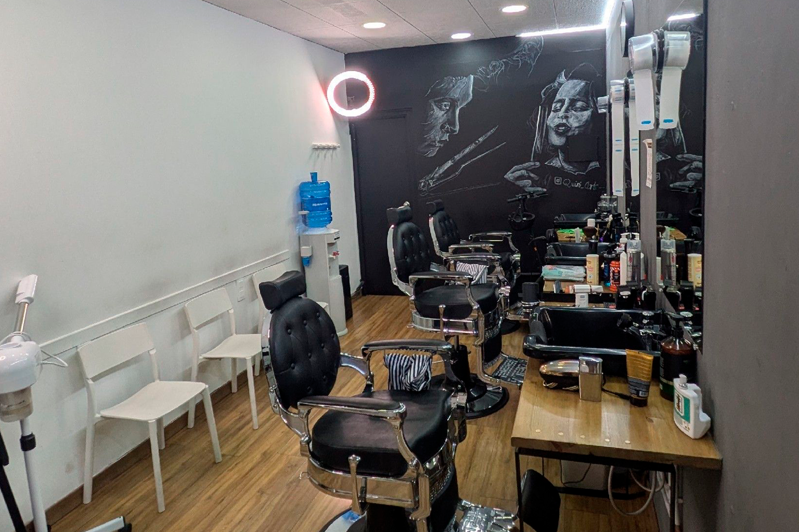
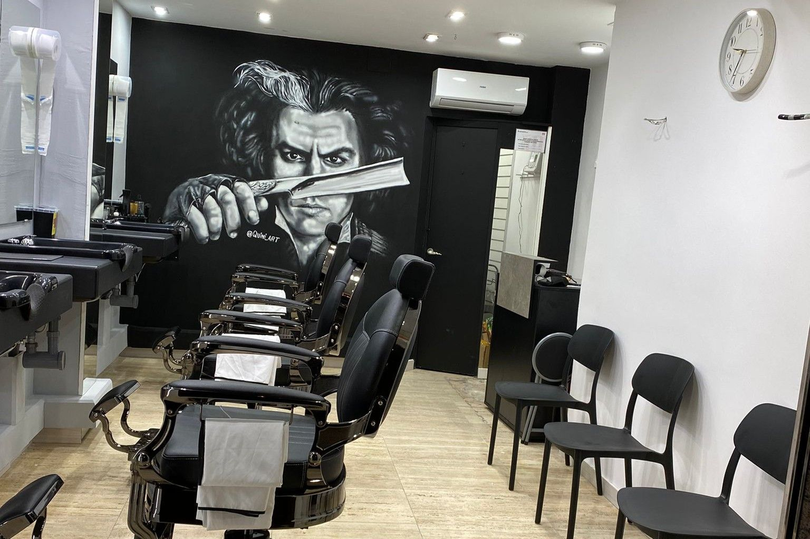

Corte de cabello
Cortes clásicos, degradados, textura y acabados limpios adaptados a tu estilo y ritmo.
BARCELONA
Excelencia en barbería clásica y moderna en Barcelona
Reservas online en segundos
Especialistas en imagen masculina
Eixample y Nou Barris
Atención personalizada
Nuestra esencia
Cada servicio se trabaja con lectura facial, técnica limpia y una conversación honesta sobre lo que te favorece. El resultado importa, pero también cómo te sientes al salir.
Por eso el espacio, la música, la precisión de la línea y el ritmo de la experiencia forman parte del servicio.
Respeto por la barbería tradicional con ejecución contemporánea.
Te recomendamos lo que encaja contigo, no lo que está de moda sin criterio.
Dos locales, una misma exigencia en el detalle.
Servicios de barbería
Cortes clásicos, degradados, textura y acabados limpios adaptados a tu estilo y ritmo.
Perfilado, rebajado y definición con una línea cuidada y un acabado que aguanta.
Recomendaciones honestas según facciones, densidad del cabello y mantenimiento realista.
Productos de calidad y pequeños rituales que elevan la experiencia sin artificio.
Trabajos reales
Una muestra del tipo de acabado que buscan quienes priorizan presencia, proporción y limpieza de línea.
Locales
Misma identidad, distinto pulso de barrio. Cambia entre sedes para ver precios, reseñas, ubicación y reserva.
Eixample
Ideal si buscas corte, barba y un servicio completo con ambiente elegante y cómodo en el centro de Barcelona.

“Excelente servicio, calidad-precio y una atención que hace que quieras volver.”
“Saben exactamente lo que hacen. Corte limpio, buen ambiente y criterio.”
Carrer de València, 501, 08013 Barcelona
Nou Barris
Una sede pensada para quien quiere mantenimiento constante, cercanía y muy buen resultado sin moverse del barrio.

“El local ha quedado espectacular y el trato es de diez.”
“Muy atentos, ambiente único y un debut que superó expectativas.”
Carrer del Doctor Pi i Molist, 14, 08031 Barcelona
Preguntas frecuentes
Sí. Ambas barberías tienen enlace directo de reserva para elegir servicio, hora y profesional.
Los más demandados son corte de cabello, corte con barba y perfilado de barba.
La reserva online es la opción más segura para evitar esperas y asegurar disponibilidad.
En Carrer de València 501, Eixample, y en Carrer del Doctor Pi i Molist 14, Nou Barris.